Sarrecenia, commonly known as the pitcher plant, is a carnivorous plant typical of well-lit and nutrient poor ecosystems (Ellison and Gotelli, 2002).The plant is reliant on prey in order to receive their essential nutrients of Nitrogen and Phosphorous, while still photosynthesizing to harness energy (Wakefield et. al., 2005). For these reasons, Sarrencia are equipped with both pitchers, leaves specialized for capturing anthropods and digestion, and phyllodes, leaves specialized in photosynthesis (Ellison and Gotelli, 2002). These plants are important model systems for a variety of reasons. Firstly, they are perennial plants and can live for decades, allowing ecologists to understand how past environmental conditions affect present populations (Ellison and Gotelli, 2002). Secondly, pitcher plants are predominantly located in nutrient deficient areas, therefore addition of nutrients such as nitrogen can have an effect on their physiology and possibly be used an an indicator for nitrogen levels (Ellison and Gotelli, 2002). Finally, Sarrencia live in bogs, which are ecosystems with high biodiversity, making the plant an integral part of the health of this ecosystem. In this analysis we will be addressing the question of what Sarrencia characteristics best predict total biomass. By understanding the specific morphological, physiological, and taxonomic characteristics that promote pitcher plant biomass, we can understand how to better manage and conserve this species, whether pitcher plants can be nutrient indicators, and what past environmental conditions may have been like for a specific pitcher plant population. We will be testing the null hypothesis that physiological characteristics do not affect pitcher plant biomass, with the alternative hypothesis that at least one physiological characteristic predicts pitcher plant biomass.
Methods
To conduct this study,ten different species of pitcher plants were used. Two plants of each species, twenty plants in total, were subjected to six different levels of feeding, for a total sample size of 120 plants. All plants were fed their appropriate amount once per week for a total of seven weeks. A total of 32 measurements of physiological characteristics were taken for each plant and included in a data set that will be analyzed in this report (Ellison and Fransworth, 2021). Next, the data set was imported and cleaned up, by renaming columns with easy to read labels and only keeping the morphological characteristics/columns we are interested in. The columns that were selected were total biomass, species, feed level, specific leaf area, chlorophyll, mass based light saturated photosynthetic rate of the youngest leaf, as well as the number of phyllodes and total number of pitchers and phyllodes of each plant.
Code
library(tidyverse)library(here)library(janitor)library(ggeffects)library(performance)library(naniar) # or equivalentlibrary(flextable) # or equivalentlibrary(car)library(broom)# would be nice to havelibrary(corrplot)library(AICcmodavg)library(GGally)library(MuMIn)
Code
plant <-read_csv(here("data", "knb-lter-hfr.109.18", "hf109-01-sarracenia.csv")) %>%#to make colunm names cleanerclean_names() %>%#selecting the list of columns to use/keepselect(totmass, species, feedlevel, sla, chlorophyll, amass, num_lvs, num_phylls)
Based on this new data set, we created a visualization of all missing observations.
Code
#visualizing the missing datagg_miss_var(plant)
Figure 1: Data Visualization Each column is displayed on the y-axis with the number of missing variables on the x-axis.
The visualization indicated that missing data was present in the chlorophyll, mass based light saturated photosynthetic rate of the youngest leaf (amass), specific leaf area (sla), number of phyllodes (num_phylls), and the total number of phyllodes and pitchers (num_lvs). As these missing observations could interfere with our analysis, we removed them from the data set by subsetting the original data set.
Code
#creating a subset of the data frame without missing valuesplant_subset <- plant %>%drop_na(sla, chlorophyll, amass, num_lvs, num_phylls)
To determine the relationship between numerical variables in our new data set, we calculated Pearon’s r and visually represented correlation using a correlation plot.
Code
#calculate pearson's r for numerical predictors, not response variables and not categorical variables#created a subset of only the numerical predictorsplant_cor <-plant_subset %>%select(feedlevel:num_phylls) %>%cor(method ="pearson")#creating a correlation plotcorrplot(plant_cor,#change shape of what's in the cellsmethod ="ellipse",#adds correlation coefficients, raddCoef.col ="black" )
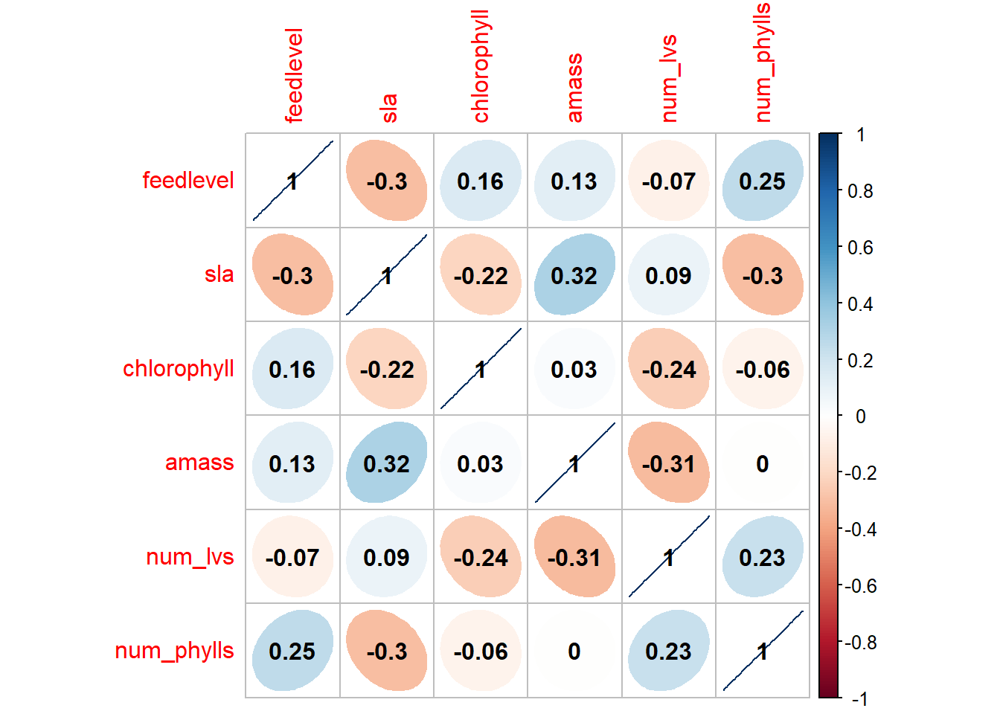
Figure 2: Pearson’s r Correlation Plot Each predictor variable labels a row or columns, where these rows and columns intersect describes the correlation between the two predictors. The Pearson’s r correlation coefficient for the two predictors is written in the box, the direction the ellipse points indicates the direction of the relationship, and the color indicates the strength of the correlation.
The visualization illustrated the strength and direction of the relationships between each of the predictor variables, which if strong can be an indicator of colinearity between predictor variables. All of the correlation values looked within reason so we continued with our analysis.To further explore the data and include categorical as well as numerical variables, another data visualization was created.
Code
plant_subset %>%#can now include categorical variables, putting the variables on x and y axisselect(species:num_phylls) %>%ggpairs()
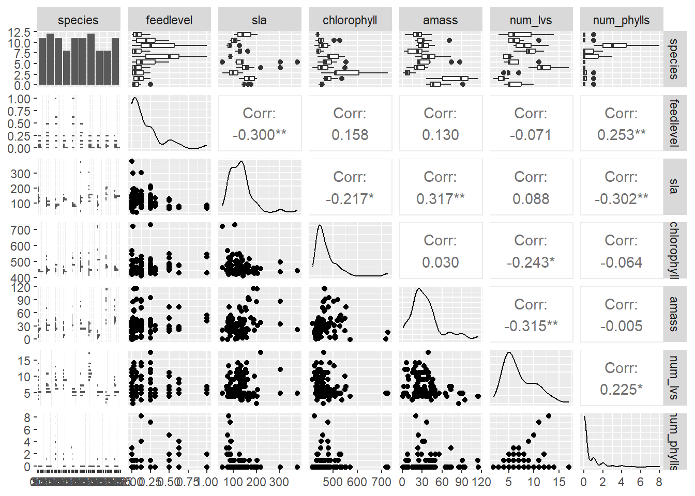
Figure 3: Relationships Between Predictor Variables Each plot in the grid compares two predictor variables. There is a visualization and correlation value (if numerical) for each predictor pair.
The matrix of plots visually represented the relationship between each predictor variable. The scatter plots showed the two variables plotted against another, the box plots are used for a visualization of the categorical variable of species, and the correlations are given for each numerical pair of predictor variables. Since we cleaned up the data, visually reviewed it, and explored relationships amongst predictor variables, we then began with creating our null and full models to use as baselines for our analysis.
Code
#creating models for both null and fullnull <-lm(totmass ~1, data = plant_subset)full <-lm(totmass ~ species + feedlevel + sla + chlorophyll + amass + num_lvs + num_phylls, data = plant_subset)
The null model is a fit linear model to predict total biomass of pitcher plants with no predictors. The full model is the fit linear model to predict total biomass when all predictor variables are factored in. We then checked the statistical assumptions associated with multiple linear regression the full These ass model. These assumptions include independent data, linearity, homoscedasticity, and normality. We first visually assessed normality and homoscedasticity using diagnostic plots for the full model:
Code
#running diagnostic plots on the full modelpar(mfrow =c(2,2))plot(full)
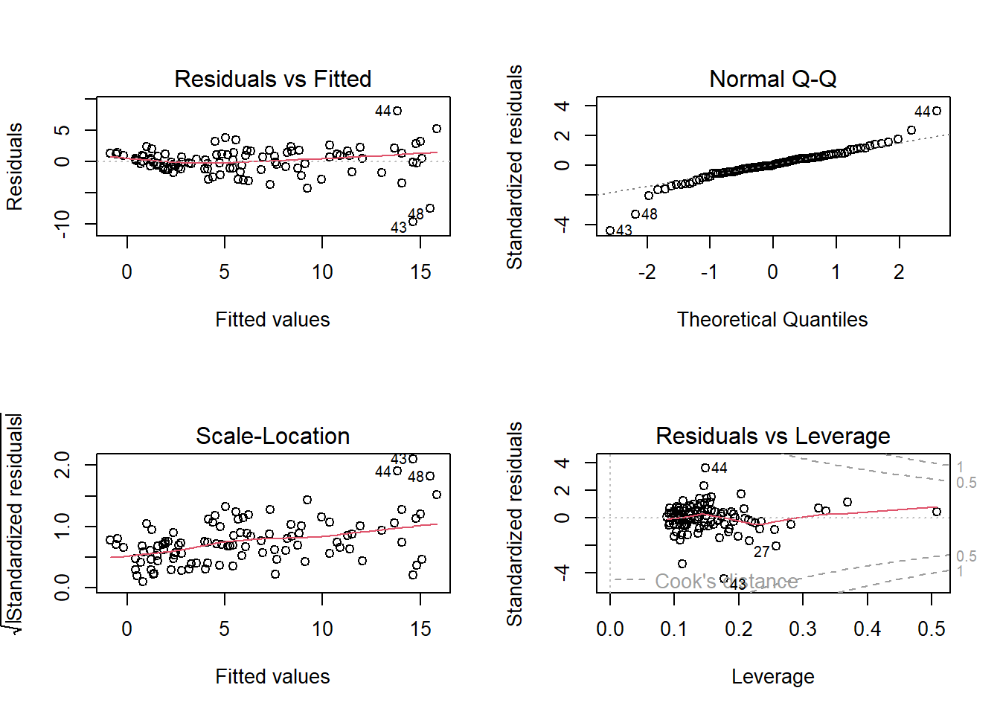
Code
#based on how clumped the residuals are int he beginning it is border line for homoscedasticity, moreso heterscedastic
Figure 4: Full Model Diagnostics The two plots on the left visualize residuals, the top right checks for normality, and the bottom right checks for out liars.
Based on the diagnostic plots for the full model above, we found that the residuals were not randomly distributed and appeared heteroscedastic. We checked the full model statistically for normality using the Shapiro-Wilk Test where the null hypothesis is that the model is normally distributed. We also check the full model for homoscedasticity using the Breusch-Pagan test, where the null hypothesis is that the model is homoscedastic.
Code
check_normality(full)
Warning: Non-normality of residuals detected (p < .001).
Code
#not normal and heteroscedasticitycheck_heteroscedasticity(full)
Both the Breusch-Pagan Test and Shapiro-Wilk Test had significant p-values, indicating that the null needed to be rejected in both instances. The full model does not meet the assumptions of a multiple linear regression because it is not normally distributed or homoscedastic. In order to meet these assumptions, we mathematically transformed the null and full models by using a log to increase residual normality.
Code
#transforming the full and null modelsnull_log <-lm(log(totmass) ~1, data = plant_subset)full_log <-lm(log(totmass) ~ species + feedlevel + sla + chlorophyll + amass + num_lvs + num_phylls, data = plant_subset)
We then checked that the new full logarithmic model met the assumptions visually and statistically.
Code
#plotting diagnostics for the log full modelpar(mfrow =c(2,2))plot(full_log)
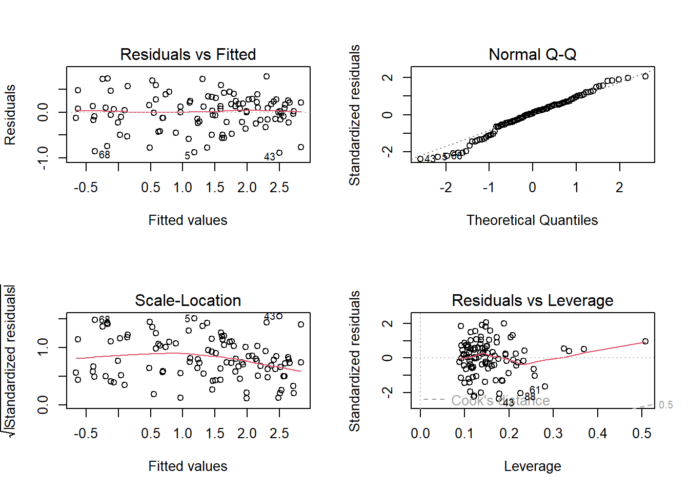
Figure :5 Full Logarithmic Model Diagnostics The two plots on the left visualize residuals, the top right checks for normality, and the bottom right checks for out liars.
The residuals appeared much more randomly distributed about the red line, indicating homoscedasticity. We then checked for normailty and homoscedasticity statistically by using the Breusch-Pagan Test and Shapiro-Wilk Test.
Code
#statistically testing the full log modelcheck_normality(full_log)
OK: residuals appear as normally distributed (p = 0.107).
Code
check_heteroscedasticity(full_log)
OK: Error variance appears to be homoscedastic (p = 0.071).
Both tests then indicated insignificant p-values, allowing us to retain the null and able to claim normality of residuals and homoscedasticity. We then evaluated multicollinearity in the full log model, which can lead to illogical coefficients and large changes in model output, by calculating the generalized variance inflation factor.
Code
#show GVIF generalized which is for categorical predictors, transformation to compare GVIF to VIF in the last column#means if there are predictors that are explaining more variance in your response variable because the predictor variables are interactingcar::vif(full_log)
We determined that multicollinearity is not a possibility in the full log model because all of the variance inflation factors were below 5. Next we explored a second model for total pitcher plant biomass that only has the predictor of species.
Code
#this model only has one predictor that is species to predict total biomassmodel2_log <-lm(log(totmass) ~ species, data = plant_subset)
As inherit biology and genetics is determinant for total size of many other animals, species seemed to be an appropriate predictor that could explain total biomass simply. The second model was then checked visually for the assumptions of multiple linear regression.
Code
#visually checking assumptionsplot(model2_log)
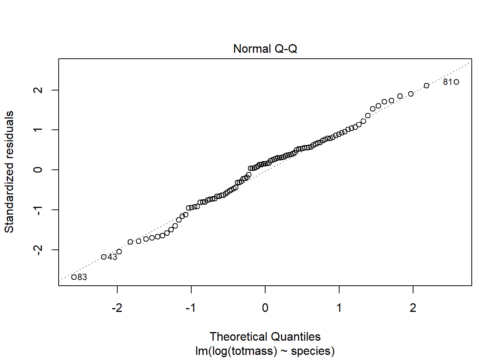
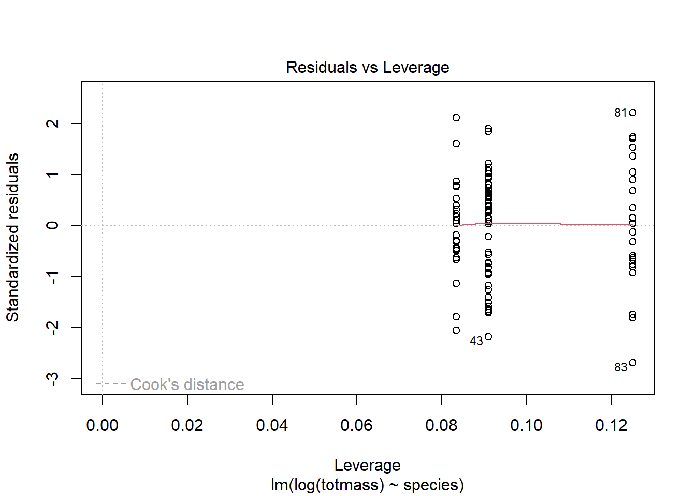
Figure 6: Second Model Diagnostics The visualization describes the distribution of residuals and normality of data in the second model which includes species as the predictor for pitcher plant total biomass.
Based on the visualization we believed the model to be normally distributed and homoscedastic. We then checked the second model statistically using the Breusch-Pagan Test and Shapiro-Wilk Test.
Code
#checking for normality of second modelcheck_normality(model2_log)
OK: residuals appear as normally distributed (p = 0.374).
Code
#checking homoscedasticity of second modelcheck_heteroscedasticity(model2_log)
OK: Error variance appears to be homoscedastic (p = 0.100).
As both tests reported insignificant p-values, the second model which only included species as a predictor was concluded to meet all the assumption of multiple linear regression. Next, a third model was formed to predict pitcher plant total biomass.
Code
#creating the third modelmodel3_log <-lm(log(totmass) ~ species + feedlevel, data = plant_subset)
The third model included species and feed level as the predictors for biomass. Although genetics determines a large amount of individual physiology, nutrient availability in the form of feed, can also influence growth. Furthermore, pitcher plants are native to nutrient deficient ecosystems making them reliant on carnivore for essential nutrients, therefore an increase in nutrient availability may allow them the opportunity to increase their biomass. The third model was then checked visually for meeting the assumnptions of multiple linear regression.
Code
#running visual diagnostics on the third modelplot(model3_log)
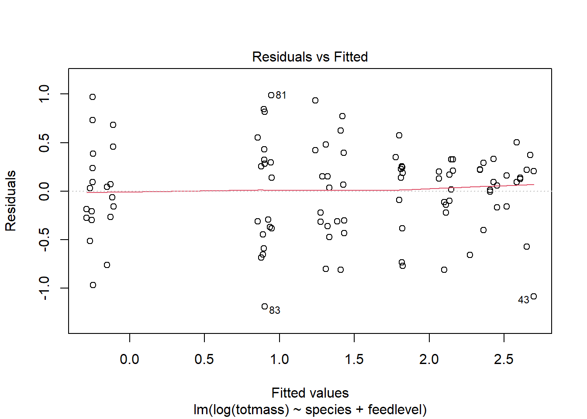
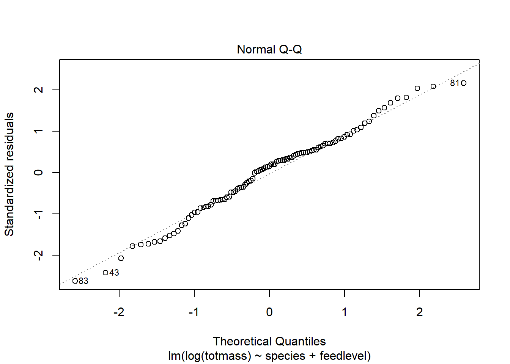
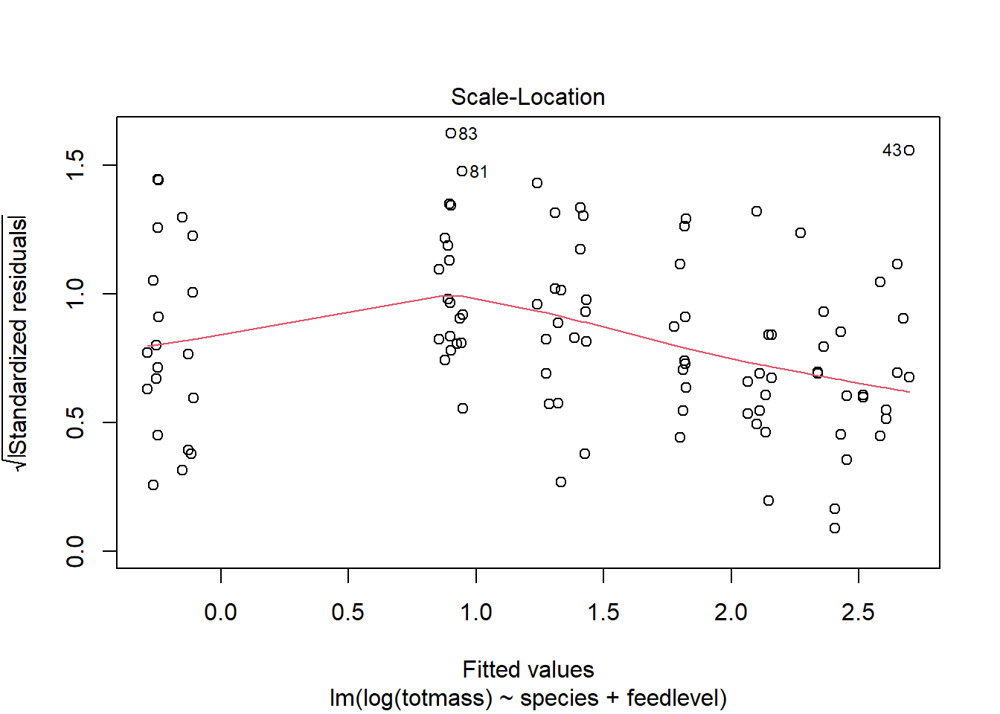
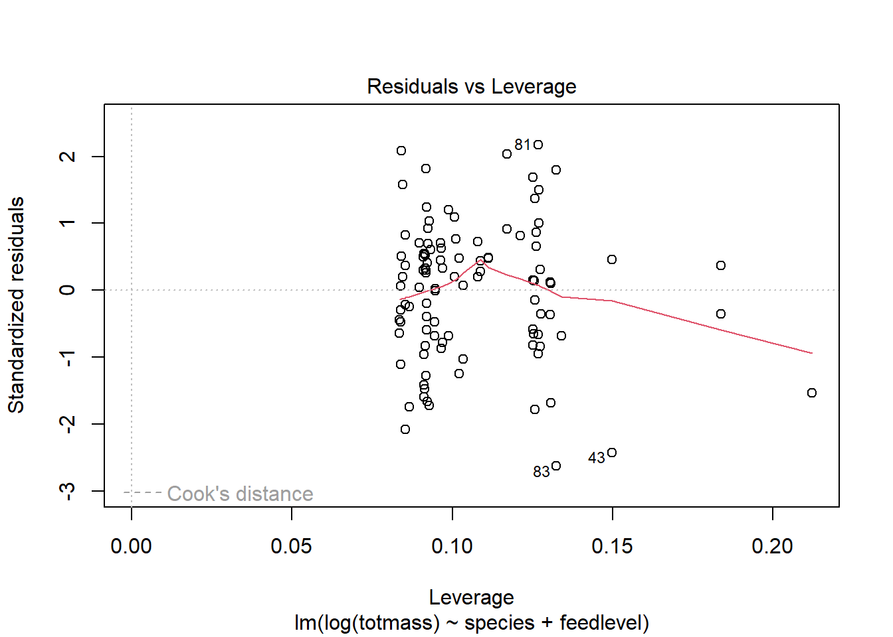
Figure 7: Third Model Diagnostics The visualization describes the distribution of residuals and normality of data in the third model which includes species and feed level to predict total biomass of pitcher plants.
As the visualization displayed randomly distributed residuals about the red line and normally distributed data based on the Q-Q plot, we assumed the third model to meet the necessary assunmptions for multiple linear regression. However, to ensure these assumptions we tested them statistically using the Breusch-Pagan Test and Shapiro-Wilk Test.
Code
#checking for normality in third modelcheck_normality(model3_log)
OK: residuals appear as normally distributed (p = 0.339).
Code
#checking for homoscedasticity in third modelcheck_heteroscedasticity(model3_log)
OK: Error variance appears to be homoscedastic (p = 0.110).
Both tests resulted in insignificant p-values, so the null was retained which indicated that the third model was homoscedastic and had normally distributed residuals. Finally, a fourth model was constructed that included species, total number of leaves (phyllodes and pitchers), and chlorophyll content.
Code
#creating model 4model4_log <-lm(log(totmass) ~ chlorophyll + num_lvs + species, data = plant_subset)
Since pitcher plants harness energy from both carnivory and photosynthesis, it was important to include a model that accounted for the latter. Developing biomass, i.e. growing, requires extensive energy, therefore a plant’s photosynthetic capabilities, measured in chlorophyll and leaves, could influence and therefore predict its biomass. The model was then checked visually for meeting the requirements of multiple linear regression.
Code
#running visual diagnostics on model 4plot(model4_log)
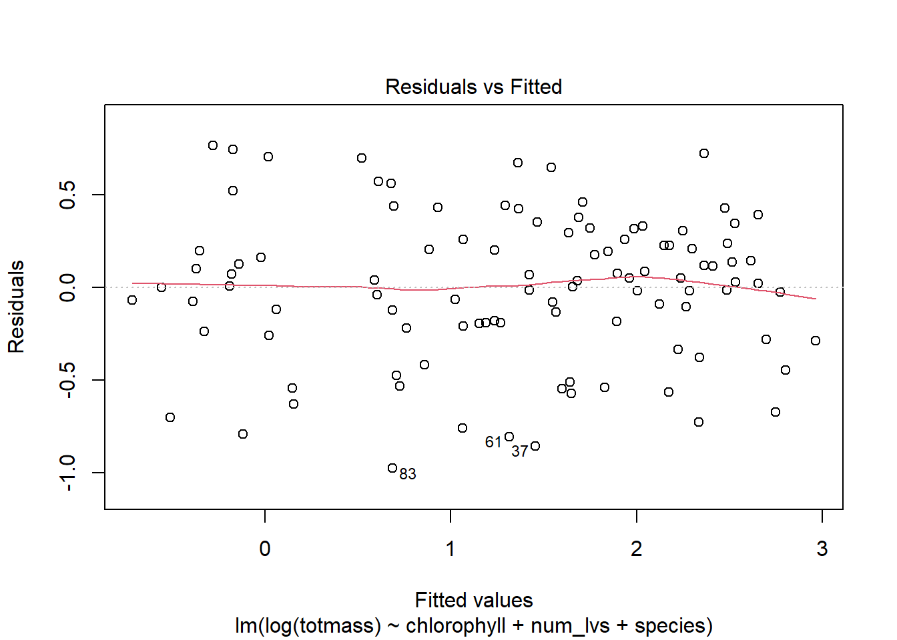
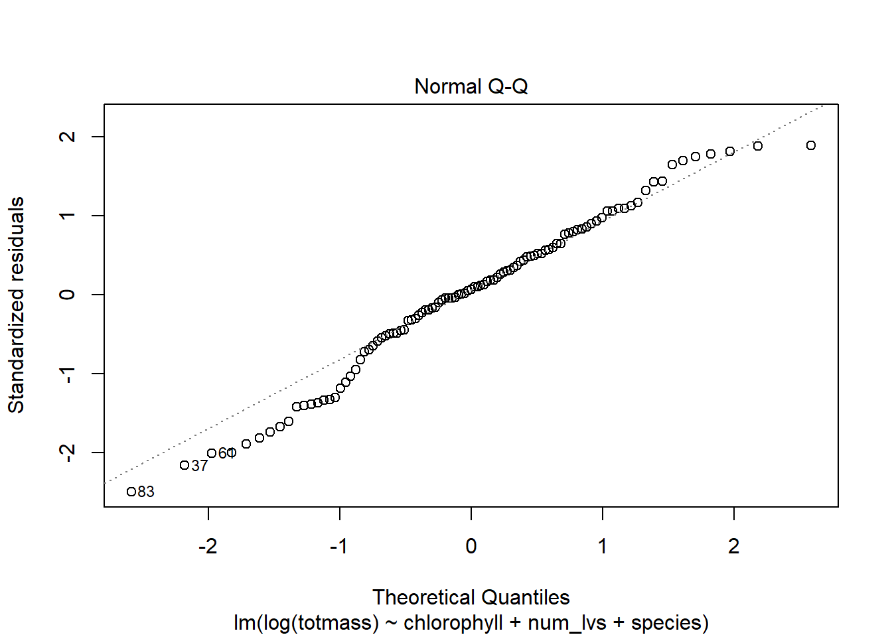
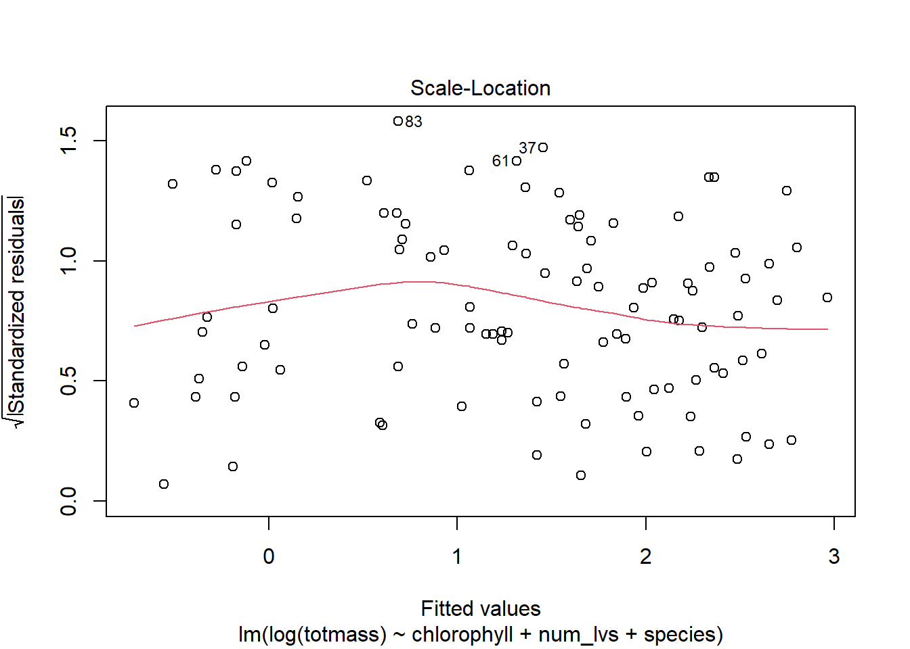
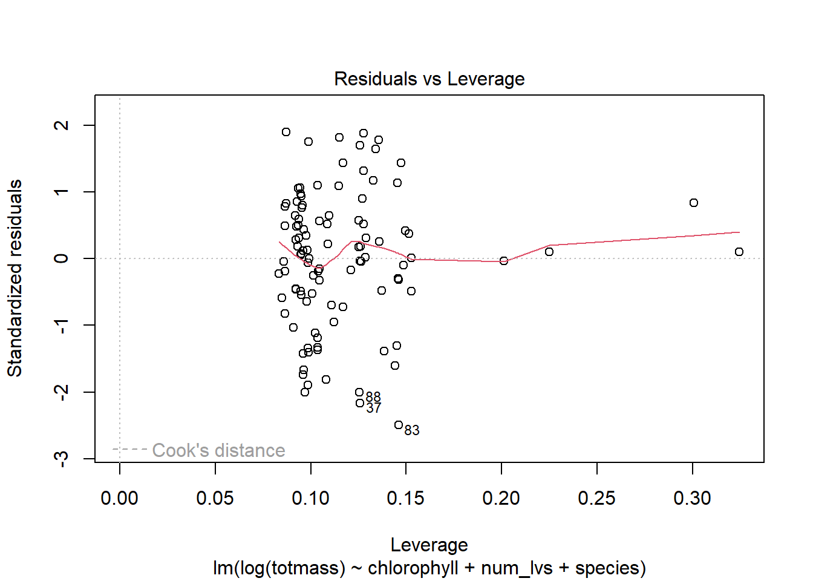
Figure 8: Fourth Model Diagnostics The visualization describes the distribution of residuals and normality of data in the fourth model which includes species, chlorophyll, and total number of leaves to predict total biomass of pitcher plants.
Based on the above plots, we interpreted the fourth model to be homoscedastic and normally distributed. To check the assumptions statistically, we then used the Shapiro-Wilk Test to test for normality, and the Breusch-Pagan Test to test for homoscedasticity.
Code
#checking fourth model for normalitycheck_normality(model4_log)
OK: residuals appear as normally distributed (p = 0.131).
Code
#checking fourth model for homoscedasticitycheck_heteroscedasticity(model4_log)
OK: Error variance appears to be homoscedastic (p = 0.092).
In both tests the null was retained, indicating that model four is both normally distributed and homoscedastic, therefore meeting the requirement of multiple linear regression. All the models were then compared using Akaike’s Information Criterion (AIC) values. AIC factor in both the predictability and complexity of each model, reporting the lowest AIC value to the model which predicts the most about total biomass in the simplest way.
Code
#determing AIC of all modelsAICc(full_log, model2_log, model3_log, model4_log, null_log)
The model with the lowest AIC value was model four which included species, chlorophyll, and number of leaves as its predictors for total biomass, indicating that this model is the best compromise between predictability and complexity.
Results
We found that model four which used species, chlorophyll, and number of leaves as predictor variables best predicted pitcher plant total biomass. This model was chosen because it met all assumptions of multiple linear regression and has the lowest AIC value in comparison to all other models, implying that it best predicts the response variable in the simplest way. Overall, the model predicts the biomass of Sarrencia based on the variables of species, chlorophyll, and number of leaves.
#creating a table for model summarytable <-tidy(model4_log, conf.int =TRUE) %>%mutate(p.value =round(p.value, 3)) %>%#making p values round to three decimals and only state whether they are less than .001mutate(p.value =case_when( p.value <0.001~"< 0.001", TRUE~as.character(p.value) )) %>%# using mutate to round each columnmutate(across(c("estimate", "std.error", "statistic", "conf.low", "conf.high"), round, 3)) %>%flextable() %>%#creating descriptive column namesset_header_labels(term ="Term", estimate ="Estimate",std.error ="Standard Error",statistic ="Statistic",p.value ="P-value",conf.low ="Low Confidence Interval",conf.high ="High Confidence Interval") %>%#fitting tableautofit()table
Term
Estimate
Standard Error
Statistic
P-value
Low Confidence Interval
High Confidence Interval
(Intercept)
-1.730
0.544
-3.180
0.002
-2.810
-0.649
chlorophyll
0.005
0.001
3.979
< 0.001
0.002
0.007
num_lvs
0.083
0.021
3.959
< 0.001
0.041
0.124
speciesalata
1.173
0.178
6.575
< 0.001
0.819
1.528
speciesflava
1.316
0.183
7.177
< 0.001
0.952
1.680
speciesjonesii
0.361
0.200
1.801
0.075
-0.037
0.758
speciesleucophylla
1.670
0.198
8.445
< 0.001
1.277
2.063
speciesminor
0.320
0.189
1.696
0.093
-0.055
0.695
speciespsittacina
-1.646
0.204
-8.058
< 0.001
-2.052
-1.240
speciespurpurea
-0.338
0.248
-1.363
0.176
-0.831
0.155
speciesrosea
-0.923
0.217
-4.246
< 0.001
-1.355
-0.491
speciesrubra
0.934
0.182
5.117
< 0.001
0.571
1.296
As seen in the summary, the model has a coefficient of determination, R^2, of 0.84, indicating that 84% of pitcher plant biomass variance can be explained by the predictors and reports a significant F-statistic of 49.22, with a p-value less than 0.001 based on 0.05 significance level. Based on the table above, model 4 predicts that all else held constant, pitcher plant species flava have a total biomass value that is 1.3 (+ or - 0.2) grams higher than that of pitcher plant species alabamensis, with a 95% confidence interval. Furthermore, model 4 predicts that all else held constant, there is an expected change of 0.08 (+ or- .02) in total number of leaves per a one unit increase in pitcher plant biomass. It should be noted that all above statistics have been logarithmically transformed. However, after back transforming the model and focusing on the predictor of number of total leaves, the following visualization was formed.
Code
#naming my prediction objectnum_lvs_predict <-ggpredict(model4_log, terms ="num_lvs", back.transform =TRUE)#creating a visualizationggplot(data = plant_subset, aes(x = num_lvs, y = totmass)) +# creating scatter plot with raw data pointsgeom_jitter(color ="orange") +# add a line showing predicted biomass based on number of leaves in pitcher plantgeom_line(data = num_lvs_predict, aes(x = x, y = predicted), color ="blue") +# insert confidence interval for the number of leaves predictiongeom_ribbon (data = num_lvs_predict, aes(x = x, y = predicted, ymin = conf.low, ymax = conf.high), alpha =0.2) +# changing axis title for ease of readinglabs (x ="Number of Total Leaves of Plant", y ="Total Biomass (g)", title ="Predicted Biomass of Pitcher Plant By Number of Total Leaves of Plant") +theme_classic()
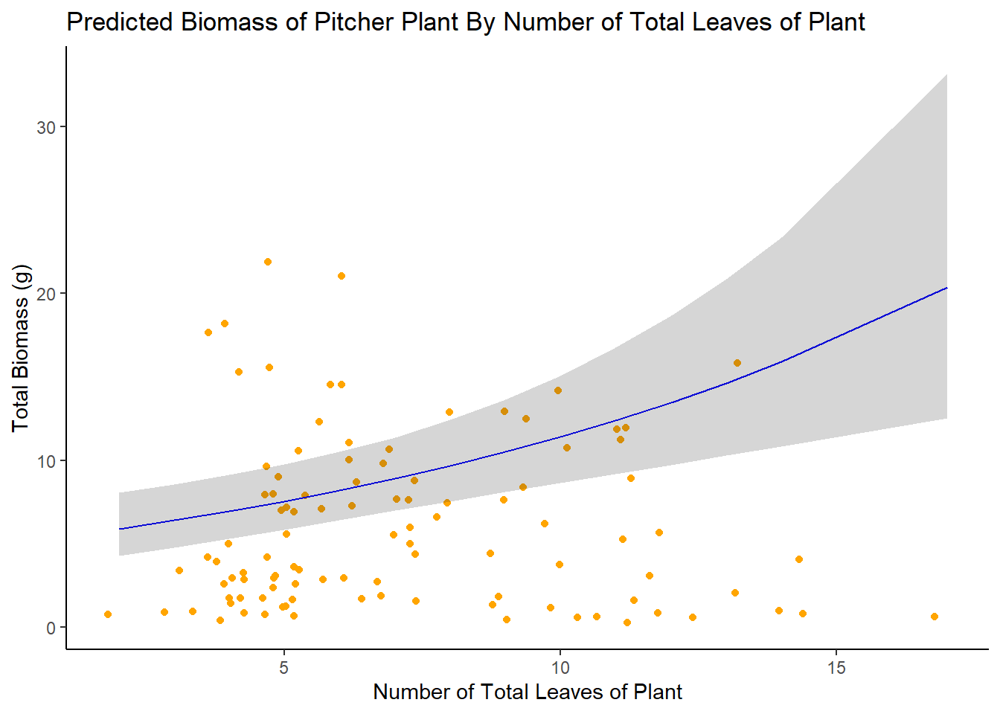
Figure 9: Prediction of Biomass By Number of Total Leaves Using Model 4 Orange points represent recorded data of plant biomass versus their total number of leaves. The blue line represents the predicted response of biomass based on number of leaves, while the gray area represents the confidence interval.
The above visualization represents the prediction of pitcher plant biomass based on number of leaves according to model four, while comparing raw data points. The raw data points display the discrepancy between the number of leaves and the predicted biomass, however the positive coefficient of prediction can be seen which is reflected in model 4.
Works Cited
Ellison, A. and E. Farnsworth. 2021. Effects of Prey Availability on Sarracenia Physiology at Harvard Forest 2005 ver 18. Environmental Data Initiative. https://doi.org/10.6073/pasta/26b22d09279e62fd729ffc35f9ef0174 (Accessed 2023-06-07).
Ellison, Aaron M., and Nicholas J. Gotelli. “Nitrogen Availability Alters the Expression of Carnivory in the Northern Pitcher Plant, Sarracenia Purpurea Purpurea.” Proceedings of the National Academy of Sciences, vol. 99, no. 7, 19 Mar. 2002, pp. 4409–4412, https://doi.org/10.1073/pnas.022057199.
Gotelli, Nicholas J., and Aaron M. Ellison. “Nitrogen Deposition and Extinction Risk in the Northern Pitcher Plant, Sarracenia Purpurea.” Ecology, vol. 83, no. 10, 1 Oct. 2002, pp. 2758–2765, https://doi.org/10.1890/0012-9658(2002)083[2758:ndaeri]2.0.co;2.
Wakefield, Amy E., et al. “Prey Addition Alters Nutrient Stoichiometry of the Carnivorous Plant Sarracenia Purpurea.” Ecology, vol. 86, no. 7, 1 July 2005, pp. 1737–1743, https://doi.org/10.1890/04-1673.